Son Tra Villa Hoi An
Quiet Pool Villa Near Old Town
Villa Gallery

Quiet Pool Villa Near Old Town
Select a contact method below for assistance
80+ hand-picked spots for food, drinks & vibes in Hoi An
"Amazing rooftop vibe overlooking the Central Market. Cold beer, great music."
📍 Chỉ Đường"Best beach club in the area. Pool, cocktails, watch the sea."
📍 Chỉ Đường"Live music every night, laid-back atmosphere, affordable drinks."
📍 Chỉ Đường"Sophisticated wine selection, intimate setting, knowledgeable staff."
📍 Chỉ Đường"Funky dive bar, cheap buckets, pool table, very social crowd."
📍 Chỉ Đường"Coffee by day, craft beer by night. Rooftop terrace with lantern views."
📍 Chỉ Đường"Great live music venue with affordable drinks. Lively atmosphere."
📍 Chỉ Đường"Hidden gem near the river. Amazing sunset cocktails and chill music."
📍 Chỉ Đường"Party bar on the main strip. Fun crowd, cheap drinks, open late."
📍 Chỉ Đường"Two-story colonial bar with live jazz and classic cocktails."
📍 Chỉ Đường"Riverside setting, creative tropical cocktails, lantern reflections."
📍 Chỉ Đường"The best cocktails in Hoi An. Creative drinks, stunning presentation."
📍 Chỉ Đường"Chill lounge vibes, Vietnamese-inspired cocktails, try the lychee mojito!"
📍 Chỉ Đường"Small intimate craft cocktail bar. Every drink is a work of art."
📍 Chỉ Đường"Open-air bar in a rice paddy setting. Signature gin cocktails."
📍 Chỉ Đường"Tiny hidden speakeasy with incredible molecular cocktails."
📍 Chỉ Đường"Rooftop views with Vietnamese-twist cocktails. Try lemongrass gimlet."
📍 Chỉ Đường"Japanese-inspired cocktail lounge. Excellent sake-based cocktails."
📍 Chỉ Đường"Anthony Bourdain called it the best sandwich ever. Essential Hoi An."
📍 Chỉ Đường"Cao Lau and White Rose are life-changing here. Heritage setting."
📍 Chỉ Đường"Most authentic pho in Hoi An. Rich bone broth, fresh herbs."
📍 Chỉ Đường"Modern Vietnamese tapas. Creative, fresh, beautifully plated."
📍 Chỉ Đường"Best vegetarian Vietnamese food. Huge portions, super cheap."
📍 Chỉ Đường"Grilled pork banh mi made fresh. Crispy and affordable."
📍 Chỉ Đường"Cao Lau noodles from ancient well water — unique to Hoi An."
📍 Chỉ Đường"Legendary chicken rice. Turmeric rice, tender chicken, fresh herbs."
📍 Chỉ Đường"DIY fresh spring rolls with BBQ pork. Fun interactive dining."
📍 Chỉ Đường"Authentic cao lau in a tiny local shop. Pure Hoi An flavor."
📍 Chỉ Đường"Best mi quang noodles. Rich turmeric broth with shrimp and pork."
📍 Chỉ Đường"The Banh Mi Queen! Rivals Banh Mi Phuong. Perfect fillings."
📍 Chỉ Đường"Huge variety of Vietnamese street food under one roof."
📍 Chỉ Đường"Social enterprise training street kids. Incredible food and cause."
📍 Chỉ Đường"Original white rose dumpling makers. Delicate shrimp dumplings."
📍 Chỉ Đường"Modern Vietnamese fine dining. Beautiful garden, seasonal menu."
📍 Chỉ Đường"Excellent vegetarian buffet. Incredible variety, unbelievable price."
📍 Chỉ Đường"Hidden rooftop restaurant with home-style Vietnamese cooking."
📍 Chỉ Đường"Farm-to-table Vietnamese. Rice paddy views while you eat."
📍 Chỉ Đường"French-Vietnamese fusion in a heritage building."
📍 Chỉ Đường"Local favorite for spicy central Vietnamese dishes."
📍 Chỉ Đường"Simple but delicious beef pho. Popular with locals for breakfast."
📍 Chỉ Đường"Best crispy Vietnamese pancakes. Stuffed with shrimp and pork."
📍 Chỉ Đường"Massive menu of central Vietnamese specialties. Great com hen."
📍 Chỉ Đường"Steamed rice rolls with minced pork and mushrooms. Silky smooth."
📍 Chỉ Đường"Exceptional Vietnamese coffee and the BEST egg coffee outside Hanoi."
📍 Chỉ Đường"Only place that makes original White Rose dumplings. Unmissable."
📍 Chỉ Đường"Huge variety of roasted nuts, dried fruits and local confectionery."
📍 Chỉ Đường"French-Vietnamese pastries, croissants and cakes. River view terrace."
📍 Chỉ Đường"Coconut shell ice cream with pandan, black sesame, durian flavors."
📍 Chỉ Đường"Dried shrimp, sesame candy, rice crackers and local dried goods."
📍 Chỉ Đường"Traditional Vietnamese sweet dessert soups. Colorful and refreshing."
📍 Chỉ Đường"Fresh tropical smoothies on the beach. Mango, passion fruit."
📍 Chỉ Đường"Vietnamese caramel custard with strong coffee. Afternoon treat."
📍 Chỉ Đường"Vietnamese pizza! Grilled rice paper with egg and chili sauce."
📍 Chỉ Đường"Creative mango desserts riverside. Mango sticky rice is divine."
📍 Chỉ Đường"Silent tea house run by deaf artisans. Beautiful teas and cookies."
📍 Chỉ Đường"Instagram-worthy coffeeshop with amazing breakfast and gorgeous decor."
📍 Chỉ Đường"Best specialty coffee in Hoi An. Single origin beans, expert baristas."
📍 Chỉ Đường"Rooftop cafe with panoramic old town views. Great sunset coffee."
📍 Chỉ Đường"Hidden garden cafe in ancient town. Peaceful oasis, coconut coffee."
📍 Chỉ Đường"Trendy modern cafe with excellent cold brew and healthy bowls."
📍 Chỉ Đường"Riverside cafe with hammocks and lantern views. Super chill vibes."
📍 Chỉ Đường"Beach cafe with fresh juices and smoothie bowls. After a swim."
📍 Chỉ Đường"Run by deaf baristas. Order via menu cards. Meaningful experience."
📍 Chỉ Đường"Beachside cafe with great coffee and cocktails. Lovely sunset."
📍 Chỉ Đường"Organic coffee and smoothie bowls. Beautiful coconut theme decor."
📍 Chỉ Đường"Most renowned tailor in Hoi An. Custom ao dai and suits in 24-48 hrs."
📍 Chỉ Đường"Magical shop staffed by deaf artisans. Handmade silk lanterns."
📍 Chỉ Đường"Friendly, affordable custom clothing. Fast turnaround."
📍 Chỉ Đường"World-class silk scarves, custom dresses, Vietnamese silk souvenirs."
📍 Chỉ Đường"Heart of Hoi An. Fresh produce, handicrafts, spices, street food."
📍 Chỉ Đường"Fresh herbs, organic teas and natural skincare from the village."
📍 Chỉ Đường"Handwoven baskets, lacquerware, ceramic bowls, embroidered pouches."
📍 Chỉ Đường"Eco-friendly fashion with Vietnamese prints. Beautiful silk scarves."
📍 Chỉ Đường"Handmade silk lanterns in every color and shape. Ships worldwide."
📍 Chỉ ĐườngHand-picked authentic experiences in & around Hoi An
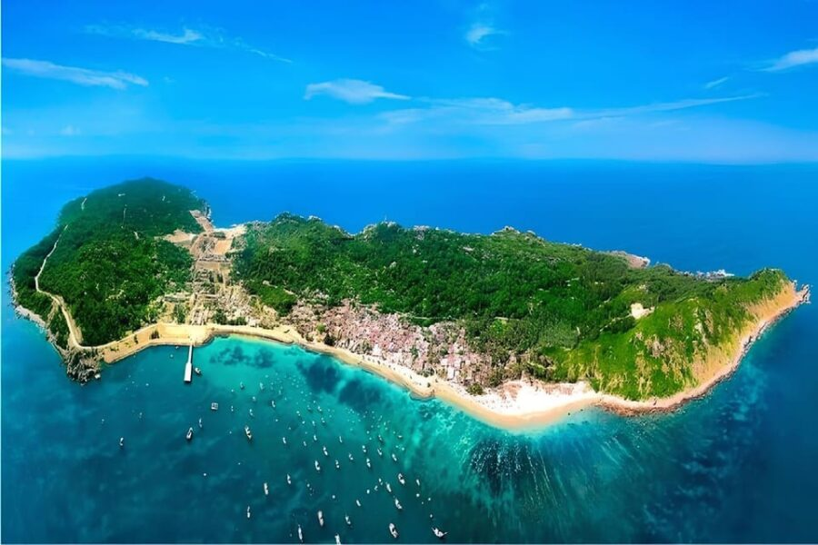
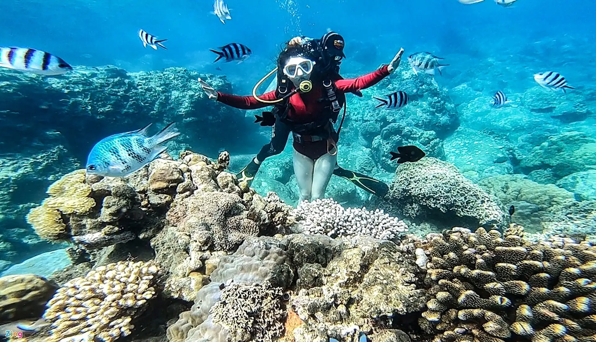
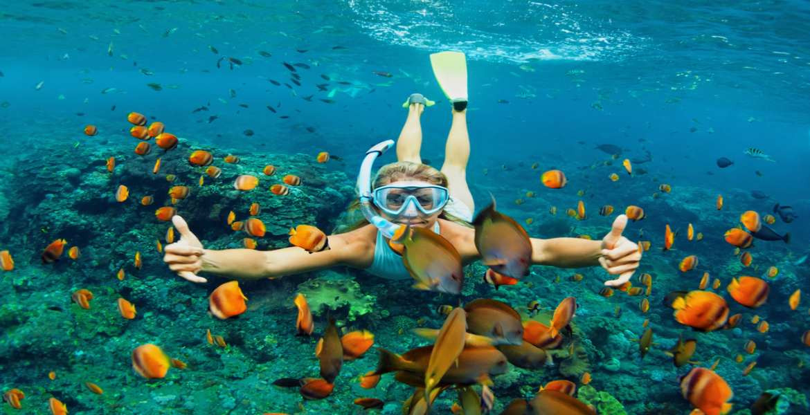
Khám phá khu dự trữ sinh quyển tuyệt đẹp. Bao gồm cano cao tốc, lặn biển tại Bãi Xép (45 phút), và tiệc hải sản BBQ trên đảo.
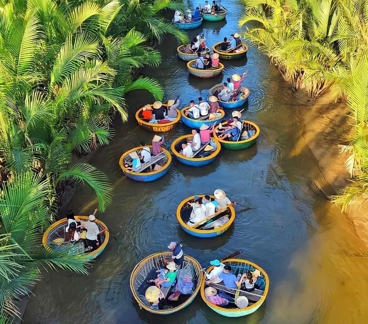
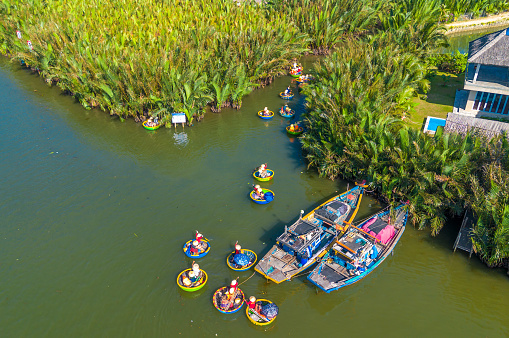
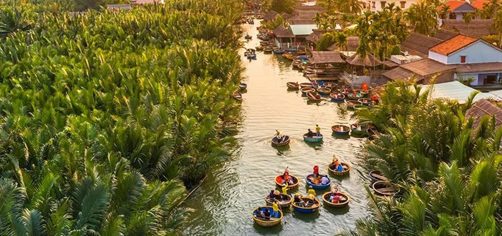
Đi thuyền thúng tre truyền thống trên các kênh dừa nước xanh mát. Trải nghiệm bắt cua và kỹ thuật đánh bắt địa phương.
Đi cáp treo dài nhất thế giới đến Cầu Vàng biểu tượng "Bàn Tay Thần". Khám phá Làng Pháp và ngắm cảnh núi non hùng vĩ.
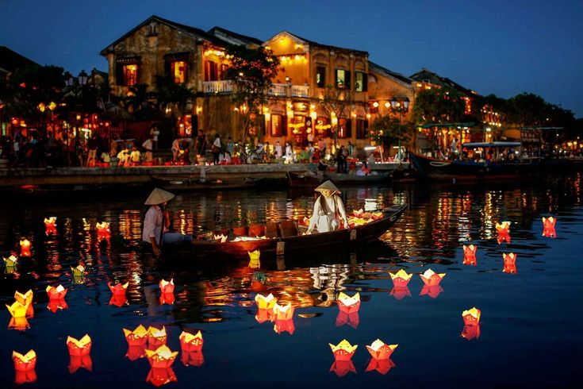
Khám phá bí ẩn phố cổ, thưởng thức chuyến thuyền thả đèn hoa lãng mạn, và nếm thử đặc sản nổi tiếng như Bánh Mì & Cao Lầu.
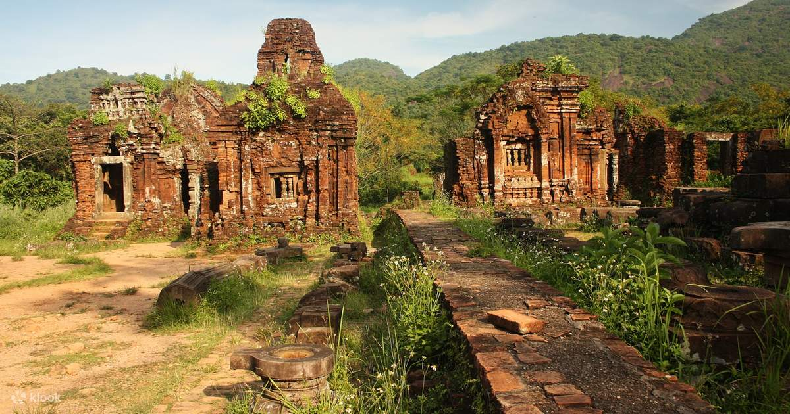
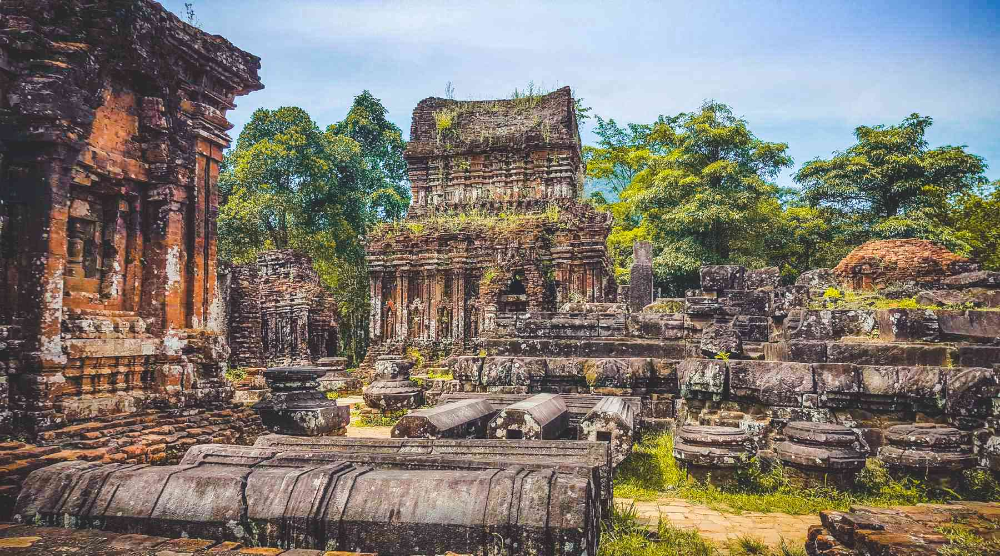
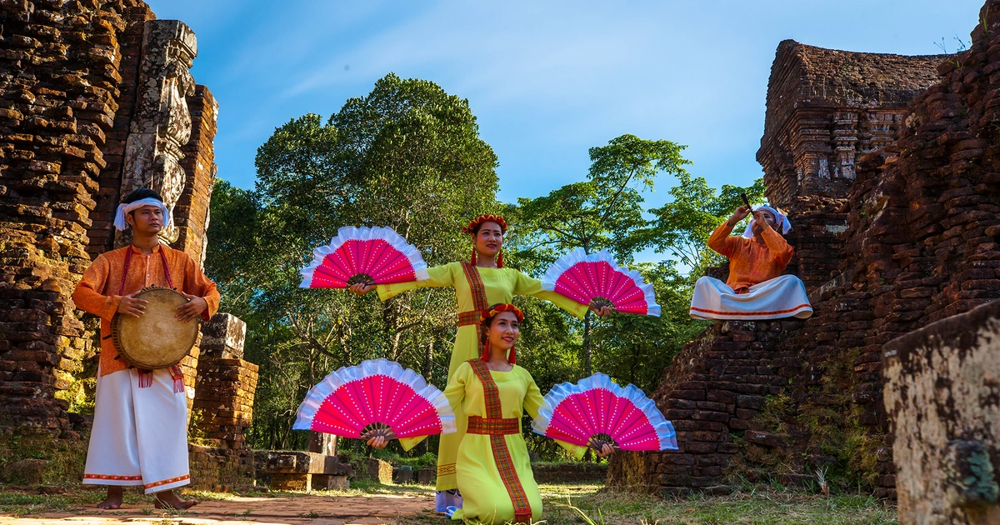
Hành trình đến trái tim tâm linh của Vương quốc Champa. Khám phá đền Hindu cổ nằm giữa thung lũng xanh mát với hướng dẫn viên chuyên nghiệp.
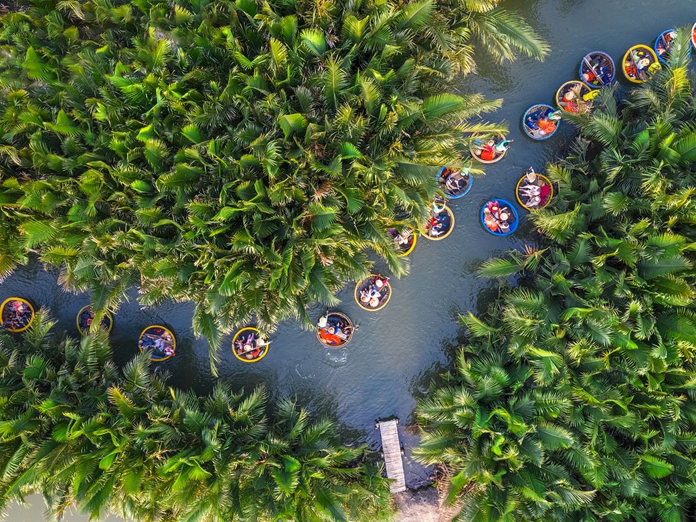
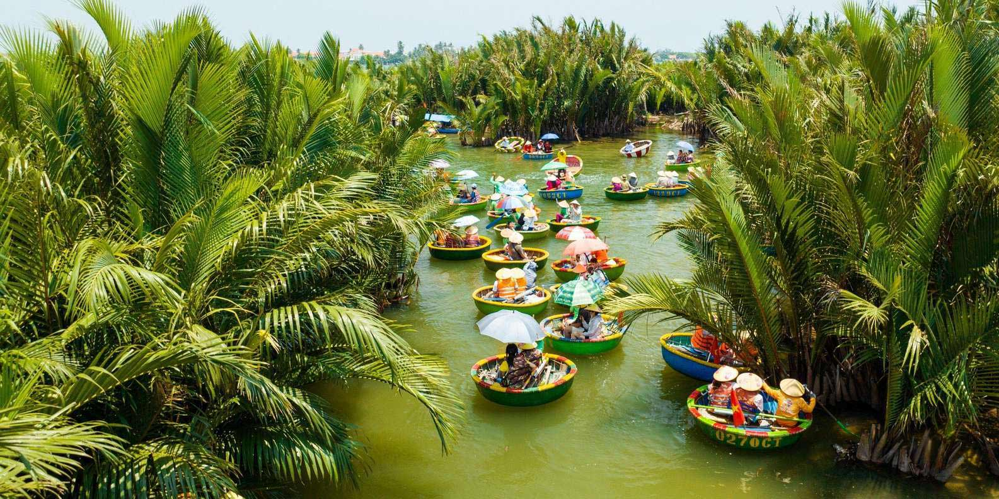
Trải nghiệm cuộc sống làng quê Hội An và ẩm thực Việt Nam. Tham quan chợ sáng, chèo thuyền thúng qua rừng dừa nước, và tham gia lớp nấu ăn 1.5 giờ với đầu bếp địa phương.
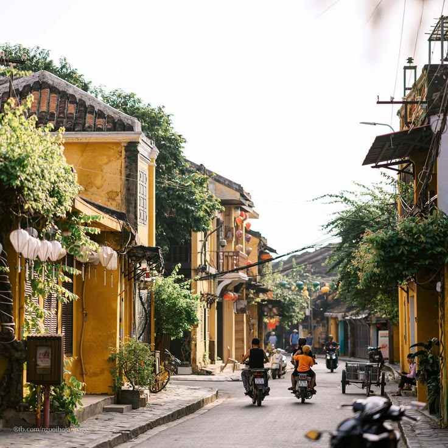
Khám phá ẩm thực đường phố Hội An cùng hướng dẫn viên — thưởng thức 9 món đặc sản tại những quán ăn yêu thích nhất của người dân địa phương. Nhóm nhỏ (tối đa 6 người).
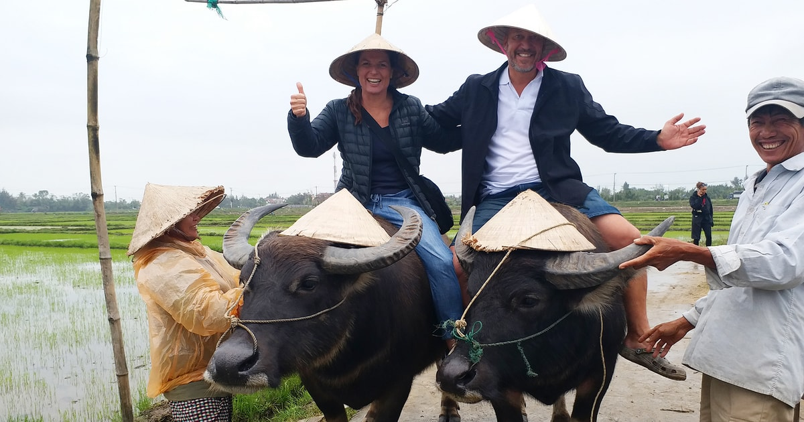
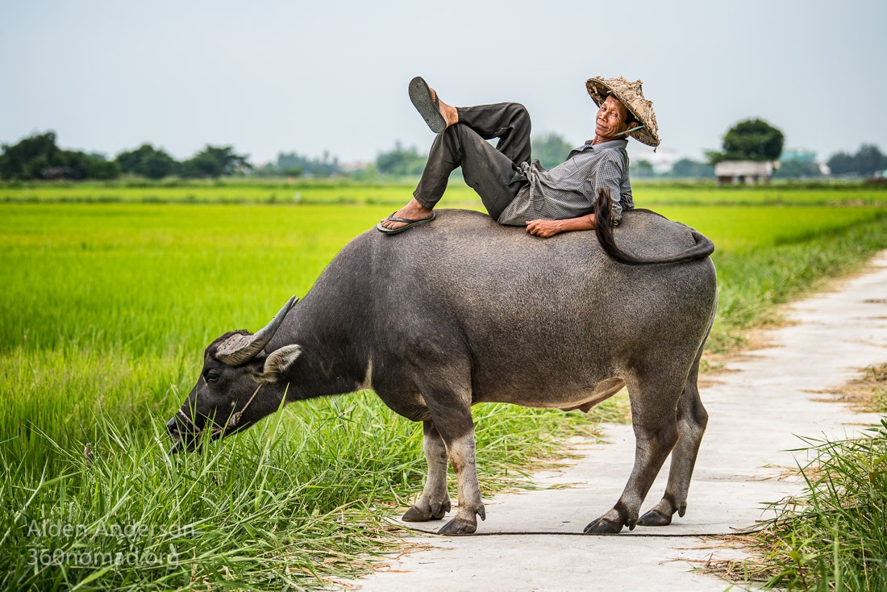
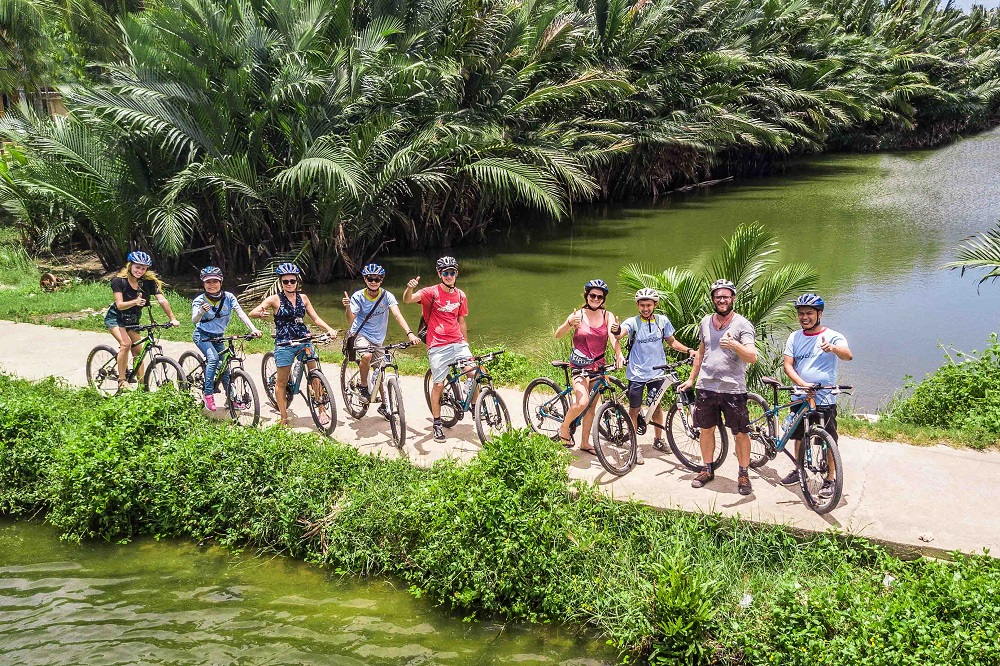
Khám phá làng quê Hội An bằng xe đạp — đi qua ruộng lúa, cưỡi trâu nước, chèo thuyền thúng, và thưởng thức bữa trưa truyền thống.
Trải nghiệm thuyền thúng tre trên kênh dừa nước. Quay thuyền thúng, hát dân ca, giăng lưới, và bắt cua. Vui cho mọi lứa tuổi!
Kết hợp chèo thuyền thúng trong rừng dừa nước lịch sử với bữa ăn Việt Nam truyền thống tại nhà hàng địa phương.
Trải nghiệm Hội An trọn vẹn nhất: làm đèn lồng thủ công, đi chợ, học nấu ăn, và chèo thuyền thúng — tất cả trong một tour!
Trải nghiệm nghề thủ công truyền thống được UNESCO công nhận trên Cù Lao Chàm: đan võng, đan lưới đánh cá, bánh ít lá gai, và tham quan đền Cá Ông.
Nghỉ qua đêm trên Cù Lao Chàm tại homestay địa phương. Hai buổi lặn biển, khám phá đảo, và trải nghiệm ẩm thực đảo chính gốc.
Lặn biển nâng cao tại 2 điểm cao cấp trong Khu Bảo tồn Biển Cù Lao Chàm. Bao gồm cơm trưa Việt Nam tại Bãi Ông và tắm biển.
Lặn biển cho người mới hoàn toàn — không cần chứng chỉ. Hướng dẫn 1-1, sâu tối đa 6–12m. Khám phá vườn san hô rực rỡ.
Dành cho thợ lặn có chứng chỉ PADI. Khám phá sinh vật biển phong phú: sên biển, cá ngựa, cá sư tử, và cá mập rạn san hô. Sâu 10–25m.
Đi bộ trên đáy đại dương — không cần biết bơi hay lặn. Đội mũ bơm khí và dạo chơi giữa cá và san hô đầy màu sắc.
Đi chợ, chèo thuyền thúng, và nấu 5 món truyền thống Hội An tại Làng Cẩm Thanh.
Trải nghiệm trọn vẹn: rừng dừa nước Cẩm Thanh, tham quan Phố Cổ Hội An, và thả đèn hoa trên sông buổi tối.
Đạp xe qua vùng nông thôn Hội An — tham quan rừng dừa Cẩm Thanh và làng rau hữu cơ Trà Quế. Bao gồm thuyền thúng, làm nông, và lớp nấu ăn.

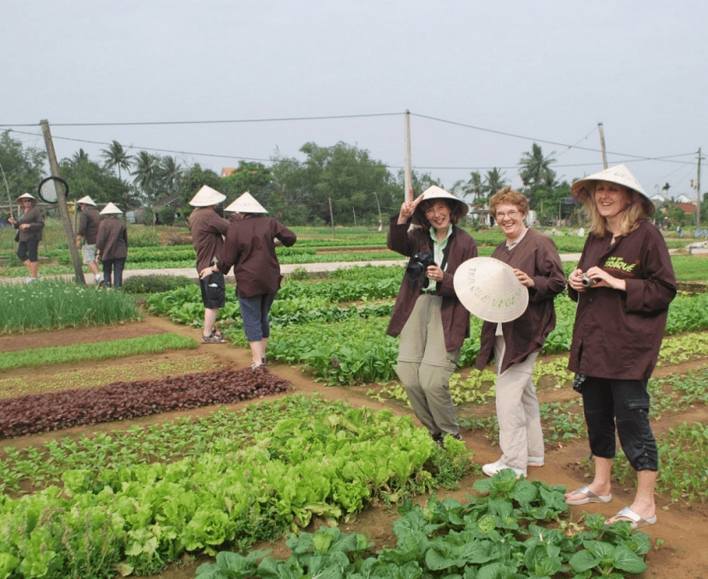
Lớp nấu ăn tại Làng Rau Hữu cơ Trà Quế — đi chợ, làm nông, massage chân, và nấu 4 món truyền thống.
Đạp xe qua ruộng lúa đến Làng Trà Quế làm nông, rồi học làm đèn lồng truyền thống Hội An và mang về đèn lồng tự tay bạn làm.
Tour đạp xe toàn diện: đến làng Cẩm Thanh, gặp nông dân, cưỡi trâu, chèo thuyền thúng bắt cua, và tìm hiểu lịch sử địa phương.
Tour đạp xe khám phá làng mộc truyền thống Kim Bồng, xem dệt chiếu hoa, và chèo thuyền thúng trong rừng dừa Trà Nhiêu.
Trải nghiệm làm bánh tráng thủ công truyền thống tại làng Kim Bồng và tham gia lớp nấu ăn với 5 món truyền thống Hội An.
Tránh đông đúc và nắng nóng bằng cách tham quan Thánh địa Mỹ Sơn lúc bình minh. Khám phá đền Hindu thế kỷ thứ 4 và thưởng thức bữa sáng địa phương.
Tham quan Thánh địa Mỹ Sơn buổi chiều, xem múa Chăm truyền thống, và du thuyền hoàng hôn tuyệt đẹp trở về Hội An.
Combo tuyệt vời: Cầu Vàng Bà Nà Hills buổi chiều, tiếp đó ăn tối ở Đà Nẵng và xem show phun lửa nổi tiếng tại Cầu Rồng ban đêm.
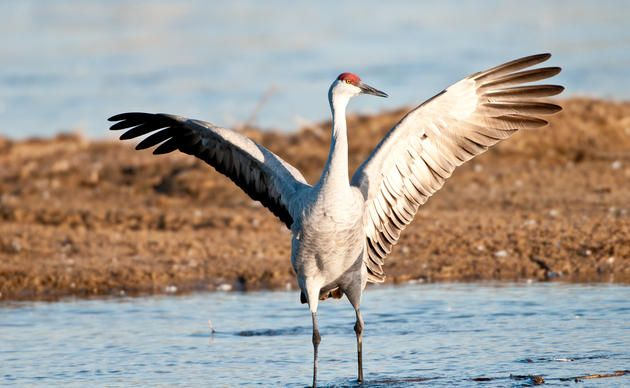
Tour Đà Nẵng tuyệt vời nhất: Ngũ Hành Sơn, Bán đảo Sơn Trà (Núi Khỉ), Cầu Vàng Bà Nà Hills, và Cầu Rồng ban đêm.
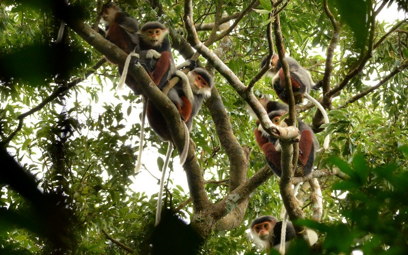
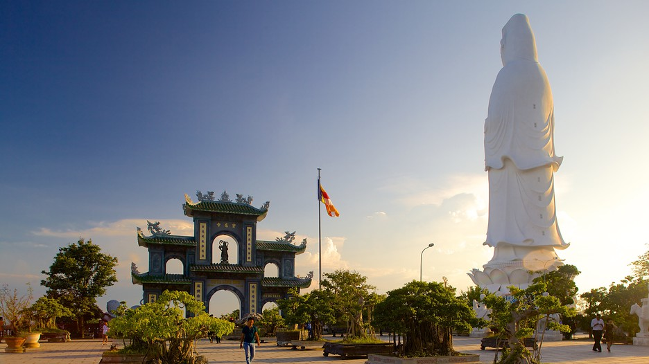
Chuyến chiều từ Đà Nẵng đến bán đảo Sơn Trà, hang động Ngũ Hành Sơn, rồi đến Phố Cổ Hội An ăn tối và thả đèn hoa trên sông.
Khám phá hang động huyền bí Ngũ Hành Sơn rồi đến Phố Cổ Hội An lung linh để ăn tối và thả đèn hoa.
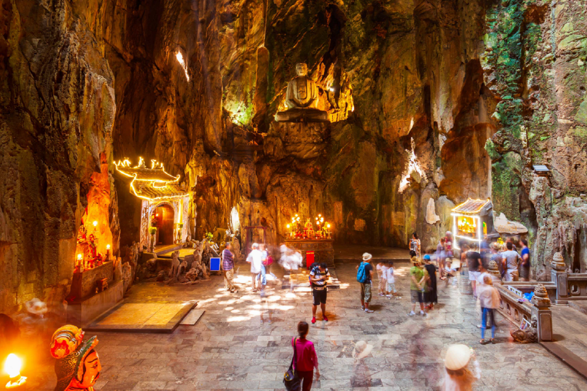
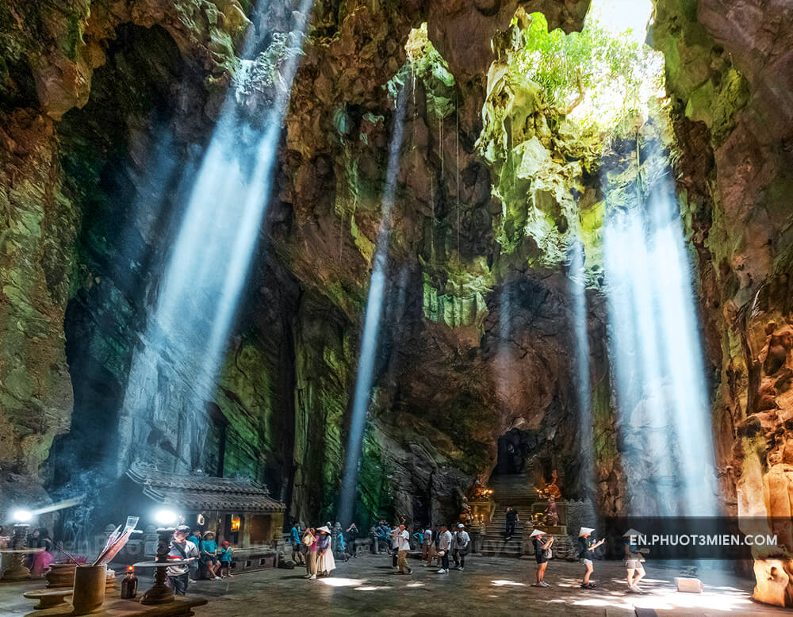
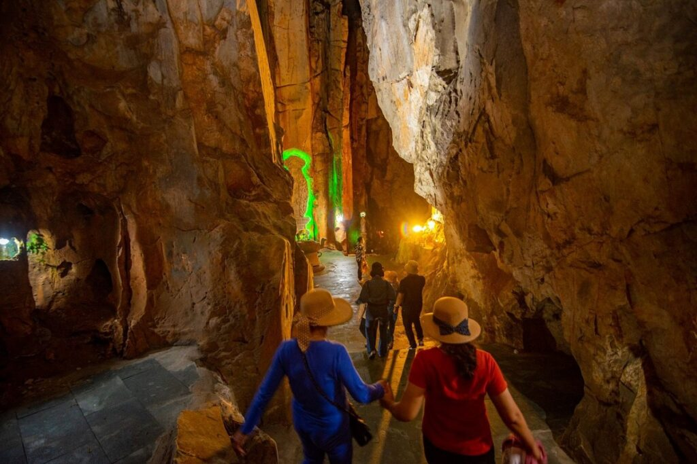
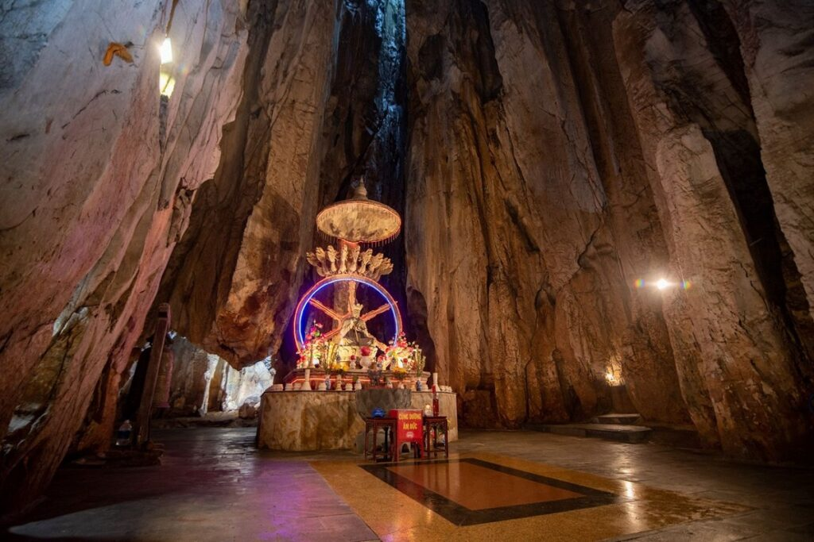
Tham quan điểm nổi bật Đà Nẵng: Phật Bà, Ngũ Hành Sơn, Động Âm Phủ kỳ bí, kết thúc với du thuyền đêm trên sông Hàn.
Hành trình cả ngày qua các danh thắng tự nhiên Đà Nẵng và di tích Champa cổ tại Mỹ Sơn, cùng lớp học làm bánh tráng.
Tour nửa ngày buổi sáng khám phá 3 điểm huyền bí nhất Đà Nẵng: Phật Bà, đỉnh Ngũ Hành Sơn, và Động Âm Phủ rộng lớn.
Phiên bản buổi chiều — chiêm ngưỡng ánh hoàng hôn vàng lọt qua những hang động Ngũ Hành Sơn.
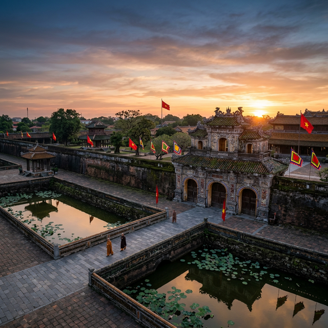
Hành trình cả ngày hùng vĩ đến cố đô. Vượt Đèo Hải Vân, tham quan Lăng Khải Định, Đại Nội, và Chùa Thiên Mụ.
Núi Khỉ, Ngũ Hành Sơn, Động Âm Phủ, Rừng Dừa Cẩm Thanh, Phố Cổ Hội An, và Thuyền Thả Đèn — tất cả trong một ngày!
Chèo thuyền thúng đơn giản và giá phải chăng qua rừng dừa Bảy Mẫu. Lướt trên mặt nước và tận hưởng không gian xanh mát.
Trải nghiệm kinh điển Bảy Mẫu với màn quay thuyền thúng hấp dẫn, bắt cua, và biểu diễn giăng lưới.
Gói cao cấp Bảy Mẫu: đón tại khách sạn, trải nghiệm quay thuyền thúng và bắt cua đầy đủ, tiếp đó là bữa ăn ngon tại nhà hàng ven sông.